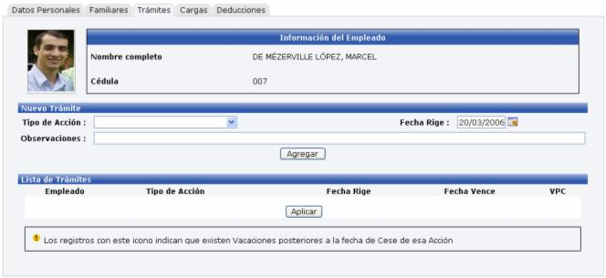
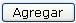
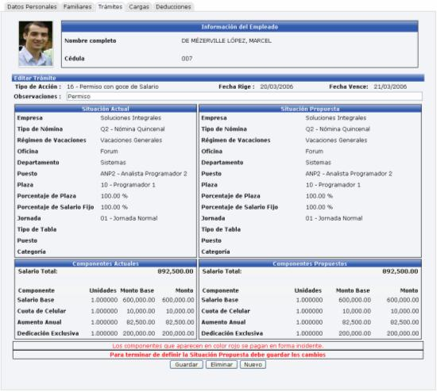
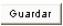
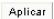

Este proceso permite en caso que se tenga habilitada la funcionalidad dentro del sistema solicitar trámites o acciones de personal que deberán en la gran mayoría de los casos ser previamente autorizadas. Para iniciar un trámite primero se debe de seleccionar el tipo de acción que se desea crear, la fecha de inicio, la fecha final (si aplica) y las observaciones que se estimen necesarias de acuerdo al tipo de acción de personal que se esta incluyendo:

Es importante mencionar que luego de seleccionar el tipo de acción a tramitar, se presiona el botón

y se presentará la pantalla siguiente donde se editará la información necesaria según el tipo de acción solicitada:

Una vez realizados los cambios necesarios, se procede a presionar el botón

para guardar los cambios y posteriormente se presiona el botón
para que la acción solicitada tenga efecto.